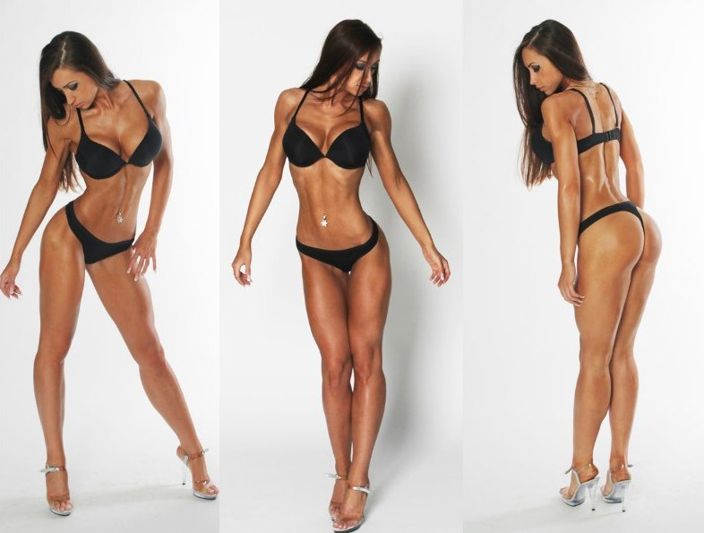

Женский тренинг
Зачем девушкам силовые тренировки?
Девушки в результате тренировок хотят стать стройными и подтянутыми. Основной акцент в тренинге обычно делается на мускулатуру ног, ягодиц, уменьшение талии и создание красивого, женственного телосложения. К тому же и женский организм сильно отличается от мужского. Все эти факторы необходимо учитывать в построении тренировочной программы чтоб тренировки были эффективными, а не вредили самочувствию.
 Чаще всего, женщины более выносливые, и времени на восстановление им нужно меньше, но настроение и работоспособность сильно меняется в течении месяца. Составляя тренировочный план, нужно отталкиваться и от этого аспекта тоже.
Учтите,
фитнес и здоровый образ жизни – это не только зал, это еще и все остальное время до и после тренировки.
Многие девушки предпочитают работать, в основном, с тренажерами, пренебрегая свободными весами. А зря, ведь силовая тренировка с отягощениями сделает для Вашего тела намного больше.
Я считаю, что успеха достигнет лишь тот кто сделает свой путь достаточно увлекательным, чтобы итти по нему бесконечно долго. Тренировки дожны быть в радость!
При регулярном, правильном тренинге уже через пару месяцев Ваше тело будет очень нравиться Вам самим, не говоря уже о мужчинах.
Чем я могу быть Вам полезен?
- -Комплексное построение фигуры. Сделаем фигуру такой как Вы хотие!
- -Учет особенностей женского организма
- -Корректировка плана питания
- -Снижение веса, сжигание подкожного жира, сушка
- -Акцент на тренировку ног и ягодиц
- -Увеличение выносливости
- -Реабилитационный тренинг при травмах суставов или позвоночника
Условия тренировок и посещения зала см. на стр
КонтактыВозможно тренироваться и получать результат в домашних условиях.
Тренер на дом